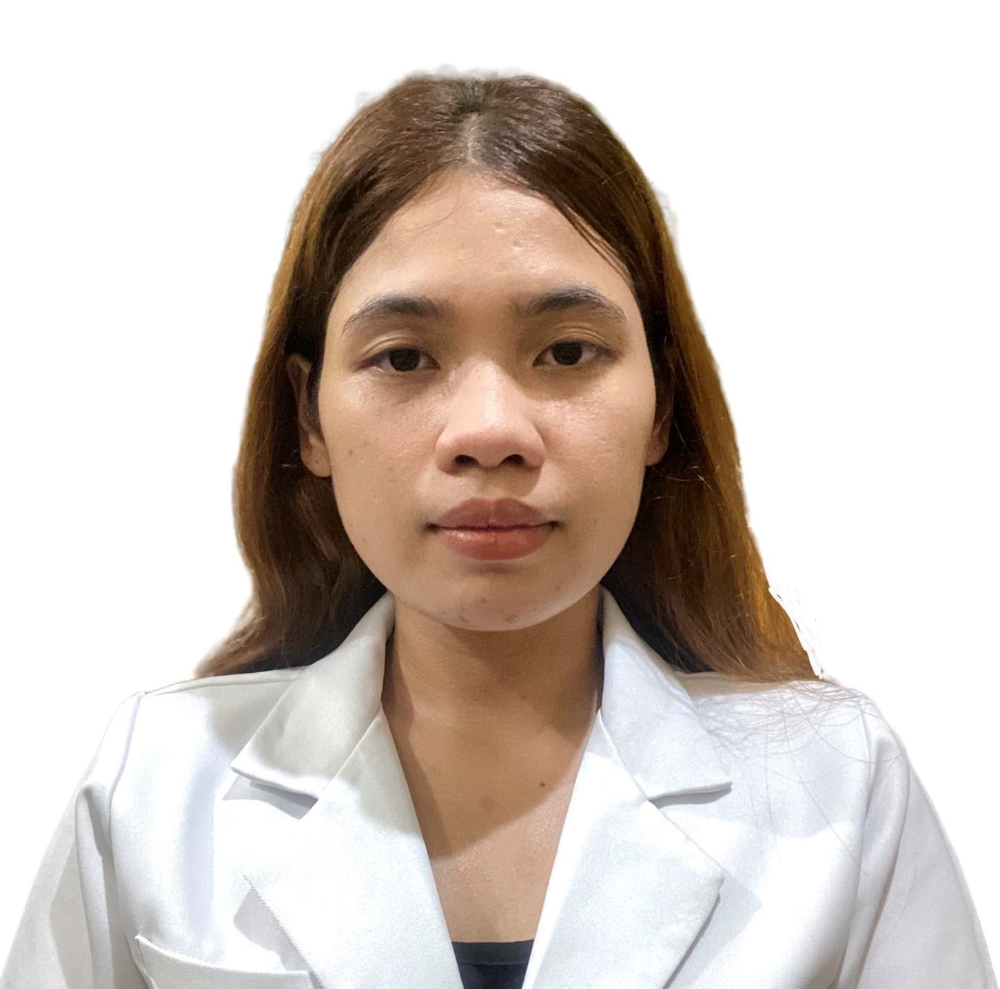

Resume

Grand Acacia Grove Subdivision
Brgy. Banay-Banay, Cabuyao City Laguna
alainesabigan@gmail.com
09154848010
Alaine M. Sabigan
EDUCATIONAL:
Tertiary Level:
Doctor of Medicine
De La Salle Medical and Health Sciences Institute
City of Dasmariñas, Cavite
AY: 2017-2021
Bachelor of Science in Biology: Major in Human Biology
De La Salle University-Dasmariñas
City of Dasmariñas, Cavite
AY: 2013-2017
Secondary Level:
High School
St. John Colleges
Chipeco Avenue, Calamba City Laguna
AY: 2013-2017
Primary Level:
Elementary
St. John Colleges
Chipeco Avenue, Calamba City Laguna
AY: 2007-2013
EMPLOYMENT:
De La Salle University Medical Center
City of Dasmariñas, Cavite
Post Graduate Intern
Year 2020-2021
SKILLS QUALIFICATION:
Creative Web Design
Telecall Institute of Technology Inc.
April 13, 2024 - June 8, 2024
SEMINAR/TRAINING ATTENDED:
| De La Salle University Medical Center | MSF Goes to Campus at De La Salle Medical and Health Sciences Institute· | June 17, 2020 |
| De La Salle University Medical Center | Tobacco Control and Cessation Based on CDC Train Modules· | December 3, 2020 |
| De La Salle University Medical Center | 4th ECG Post Graduate Course 2021: A Clinical Approach to ECG Interpretation· | July 1-2, 2021 |
| De La Salle University Medical Center | Research Productivity Series Module 1: Cruising Content: Discovering Scholarly Content for Research· | August 9, 2021 |
| De La Salle University Medical Center | DOH Primary Care Workers' Online Orientation· | February 20, 2022 |
{kind=link}
CHARACTER REFERENCE:
| Dr. Christine Joy Maala | General Physician | Maala Clinic | 09163301501 |
| Dr. Mary Grace Subijano | General Physician | Subijano Clinic | 09234061092 |
| Dr. Charlene Mutya Liveta | Internal Medicine Resident Doctor | City of General Trias Doctors Medical Center | 09206888422 |
Batch 9 Year 2024
TELECALL INSTITUTE OF TECHNOLOGY INC.